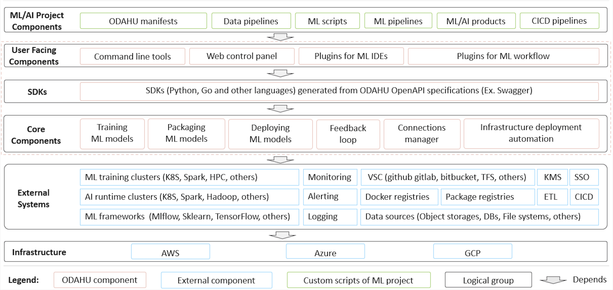

Architecture¶
The components diagram below shows high level architecture of ODAHU project.
Core components:
- Training component for executing ML model training jobs in K8S.
- Packaging component for wrapping up ML model binary to an online service, batch job, library or command line tool.
- Deployment component for deploying ML model as a service or batch job.
- Feedback Loop component for collecting prediction feedback and linking it with actual prediction request and response.
- Connections component for managing credentials for external systems (data storages, code repositories, package repositories, docker registries, etc.) in a secure way. It uses HashiCorp Vault under the hood.
- Deployment automation scripts for deploying ODAHU components to major cloud providers AWS, Azure, GCP.
Interfaces:
- RESTful API
- SDK for ODAHU components API generated from OpenAPI/Swagger specification.
- Web control panel based on ODAHU SDK for interacting with ODAHU components via Web UI.
- Command line interface based on ODAHU SDK for interacting with ODAHU components via terminal commands.
Extensions for external tools:
- Argo Workflow templates based on ODAHU SDK and CLI provide Argo Workflow steps for ODAHU Training, Packaging and Deployment APIs Argo Workflow
- ODAHU Airflow plugin based on SDK provides Airflow operators for ODAHU Training, Packaging and Deployment APIs Apache Airflow
- JupyterLab extension adds UI features to JupyterLab for interacting with ODAHU components.